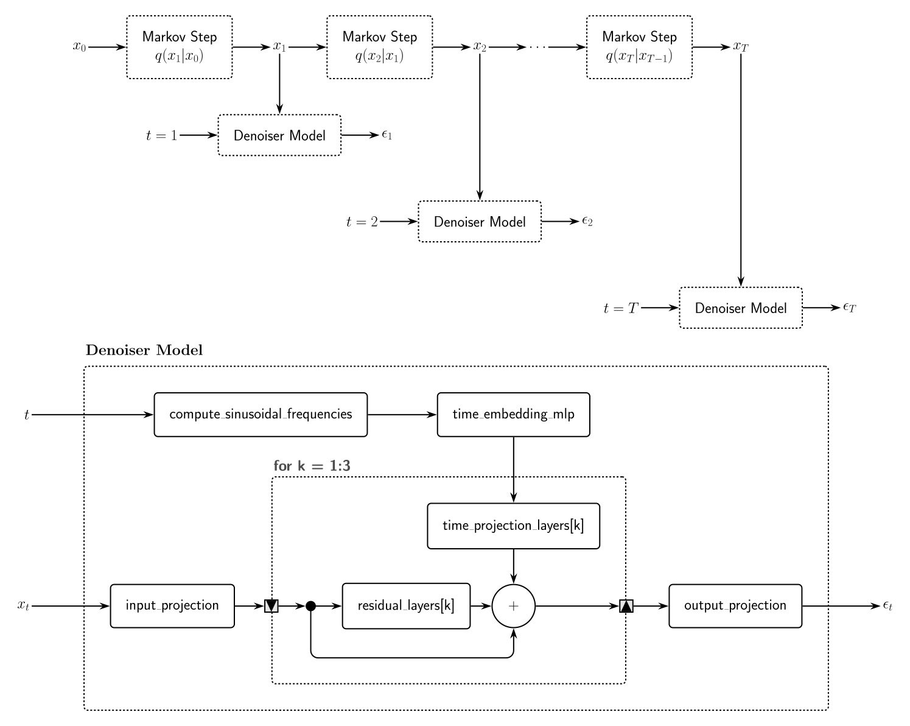

Diffusion Models
Diffusion Models (DMs) [6] are highly popular generative models that, like Variational Autoencoders (VAEs), feature a conceptually straightforward architecture, despite operating on completely different principles. While VAEs are parameterized by an encoder and a decoder neural network, DMs are parameterized by a denoiser model and a noise schedule structured as a Markov chain. Furthermore, both frameworks feature a latent space; however, unlike a VAE's compressed latent bottleneck, the latent space of a DM retains the exact dimensions of the input data.
Once a DM is trained, its denoiser model and reverse noise schedule can be used as a generative model. This generation process is possible because the forward process forces the final latent variables to become statistically independent, allowing us to simply seed the network with pure random noise to synthesize completely new data.

Noise Model
The noise model, also referred to as the forward process, is conceptually the simpler component of a diffusion model. It begins with a noiseless input data point $x_0$, which is procedurally corrupted by adding small amounts of Gaussian noise across $T$ sequential steps. Given a sufficiently large $T$, the final latent variable $x_T$ converges entirely to isotropic Gaussian noise. Each individual transition step is parameterized by a variance schedule $\beta_t$ and formulated as:
\[x_t \equiv \sqrt{1 - \beta_t} \ x_{t-1} + \sqrt{\beta_t} \ \epsilon_t \implies \epsilon_t = \frac{\displaystyle x_t - \sqrt{1 - \beta_t} \ x_{t-1}}{ \displaystyle \sqrt{\beta_t}},\]
where
\[\epsilon_t \sim \mathcal{N} \left(0, I \right) \ \forall t \in \left \lbrace 1, \dots, T \right \rbrace.\]
Denoiser Model
Various neural network architectures have been proposed for the denoiser component of diffusion models. A highly popular choice is the U-Net architecture [7], which is well-suited for processing high-dimensional spatial data like images due to its hierarchical downsampling and upsampling skip connections. However, since the primary focus of this module is on low-dimensional synthetic data generation, the architecture utilized for the denoiser model is a time-conditioned residual neural network (ResNet) [8], which efficiently tracks and processes lower-dimensional topologies without spatial bottlenecking.
The underlying model is implemented as a TabularDenoiser, a custom Lux layer designed specifically for vector-based tabular inputs. Mathematically, it computes the function $\epsilon_\theta(x, t)$ to output a noise state vector matching the dimensions of the input data.
1. Sinusoidal Time Embedding Pipeline
To inject temporal context into a stateless feedforward structure, the scalar time step vector $t$ is mapped into a fixed-size vector space of dimension $T$ using sinusoidal frequencies controlled by a maximum period parameter $\omega_{\max}$. For a coordinate dimension index $i \in \{0, \dots, T/2 - 1\}$, the frequency scale is defined as:
\[\lambda_i = \exp\left( - \frac{i \cdot \log(\omega_{\max})}{T / 2} \right). \]
The static sinusoidal features are constructed by concatenating the sine and cosine transformations of the scaled time vector, truncated exactly to dimension $T$:
\[\mathbf{t}_{\text{static}} = \begin{bmatrix} \sin(t \cdot \lambda_0) \\ \vdots \\ \sin(t \cdot \lambda_{T/2 - 1}) \\[0.15cm] \cos(t \cdot \lambda_0) \\ \vdots \\ \cos(t \cdot \lambda_{T / 2 - 1}) \end{bmatrix}.\]
This static frame is passed through a multi-layer perceptron (time_embedding_mlp), consisting of a non-linear Dense layer with an activation function $\sigma_1$, all activation functions are relu by default, followed by a linear projection layer, yielding a shared time context vector of size $d_h$:
\[\mathbf{e}(t) = \mathbf{W}_2 \cdot \sigma_1 (\mathbf{W}_1 \cdot \mathbf{t}_{\text{static}} + \mathbf{b}_1) + \mathbf{b}_2,\]
where $\mathbf{e}(t) \in \mathbb{R}^{d_h}$.
2. Latent Processing & Time-Conditioned Residual Blocks
The continuous data vectors $x \in \mathbb{R}^{d_{\text{in}}}$ are initially projected into the hidden dimension $d_h$ using an input_projection layer:
\[h_0 = \sigma_\text{in}(\mathbf{W}_{\text{in}} \cdot x + \mathbf{b}_{\text{in}}). \]
The hidden state features are then iteratively updated through a sequence of three independent time-conditioned residual operations. Each block tracks the interaction of a learned feature transformation (residual_layers) and a dedicated temporal bias projection (time_projection_layers). For each block $k \in \{1, 2, 3\}$ by default, the update evaluates to:
\[h_k = \sigma_\text{feat}^{(k)} \left(\mathbf{W}_{\text{feat}}^{(k)} \cdot h_{k-1} + \mathbf{b}_{\text{feat}}^{(k)}\right) + \mathbf{W}_{\text{time}}^{(k)} \cdot \mathbf{e}(t) + \mathbf{b}_{\text{time}}^{(k)} + h_{k-1}.\]
3. Output Projection & Training Objective
After the final residual step, the structural features $h_3 \in \mathbb{R}^{d_h}$ are mapped back into the data input space via a linear output_projection layer:
\[\epsilon_\theta(x, t) = \mathbf{W}_{\text{out}} \cdot h_3 + \mathbf{b}_{\text{out}}. \]
The entire architecture is optimized end-to-end using a Mean Squared Error (MSE) loss function, which forces the predicted noise output to match the true injected Gaussian noise vector $\epsilon_t$:
\[\mathcal{L}(\theta) = \mathbb{E}_{t, x_0, \epsilon_t} \left[ \Vert{} \epsilon_t - \epsilon_\theta(x_t, t) \Vert{}^2 \right].\]